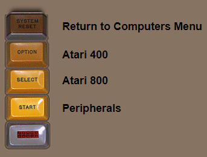
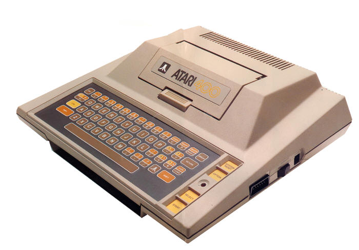
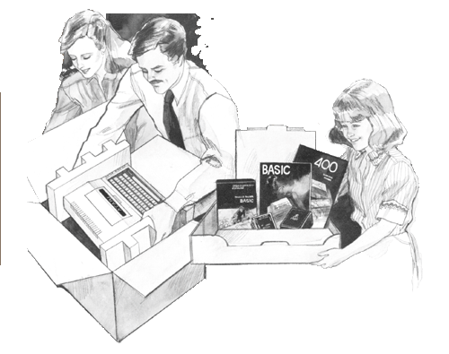

|

Technical Data & Tear Down
Atari BASIC
Atari 400/800
Hardware Manual
|

The Atari 400, also known as
"Candy" was Atari's second computer released in 1979 along with her
big sister, the Atari 800 which was known as "Colleen".
The Atari 400 was also referred
to as "The Basic Computer." It was meant to be an entry level
computer but it was a computer in search of its real purpose.
Candy was meant to be a video game system with a computer keyboard,
but last minute decisions changed its design to be a low end
computer and less of a video game system.
Candy, just like Colleen would
have a rather unique case design. Douglas Hardy who was the
co-designer of the original Atari 2600 VCS console designed the very
unique and elegantly high tech looking case for the Atari 400.
It too had a 2mm thick aluminum RF shield over its internal
electronic components and this also compromised part of the Atari
400 case. When opening the cartridge door, the user could see
the aluminum chassis within. The cartridge door on the
Atari 400, just as on the Atari 800, had a safety switch that turned
off the computer when the door was opened to protect it from
accidentally inserting or removing the ROM cartridges from the
cartridge bay within.

The Atari 400's originally
shipped with 8k but that was changed very quickly to 16k.
The unit has an SIO (Serial I/O connection port on the side) for
connecting Tape drives, modems and printers. To use more
advanced programs and disk drives the Atari 400 would need to have
more RAM memory added. Unlike the Atari 800 which had an
easily accessible expansion bay to instead memory modules into, the
Atari 400 would have to be physically opening to have larger memory
installed
The Atari 400's lack a
composite video monitor port on them and can only be connected to a
TV through an RF connector. Since the system was meant to
really be more video game console than computer, the keyboard is a
kid friendly membrane keyboard which is meant for just casual key
presses, not for touch typing. Using it for Word Processing, On-line communications usage or
Programming becomes cumbersome,
tiring and frustrating. Several companies did release
keyboard upgrades for the Atari 400 though.
(Work in
progress, more content to be added, updated 3/18/2019)
|